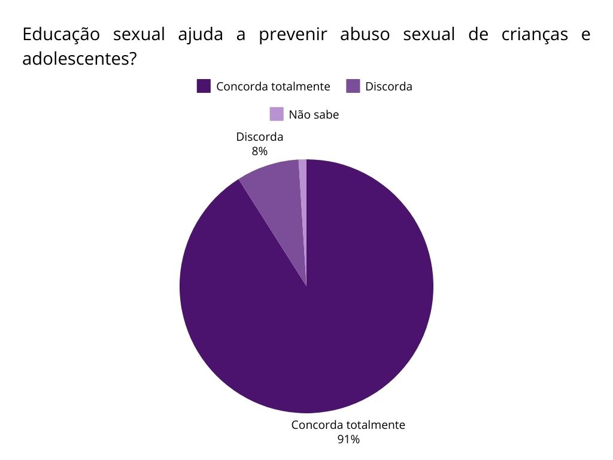
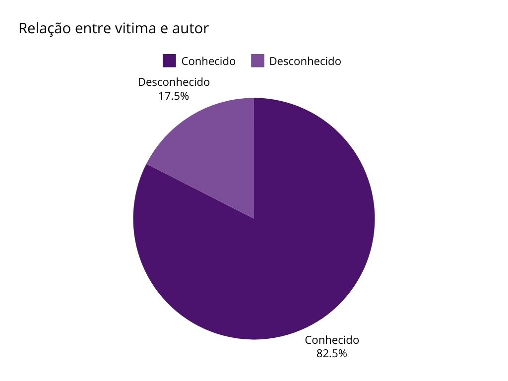

Boa parte dos pesquisadores da área defendem que não é aceitável se referir à noção de sexo e sexualidade como iguais/parecidos. A palavra sexo está ligada à anatomia, aos ógãos sexuais, e é utilizada para distinguir as diferentes biologias do corpo feminino e masculino, da mesma forma, refere-se ao ato sexual (SENEM & CARAMASCHI, 2017). De acordo com Maia (2010, p. 2), “sexualidade é o nome que damos para o aspecto da vida humana que inclui as sensações corpóreas e subjetivas que envolvem, também, as questões emocionais”, ou seja, a sexualidade humana não se trata apenas da prática sexual para fins recreativos ou reprodutivos, mas de relações de afeto, autoconhecimento, religião, cultura, questões de gênero, orientação sexual, prazer e reprodução, e é particular de cada indivíduo, variando conforme a época e a cultura. A sexualidade é complexa e inclui aspectos naturais, sociais, psicológicos, espirituais, religiosos, políticos, legais, históricos, éticos e culturais, que se desenvolvem ao longo da vida. Trata-se de vivências pessoais e subjetivas e faz parte da intimidade e privacidade humanas. É, também, uma construção social, já que varia dentro de crenças, práticas, comportamentos e identidades. A possibilidade de ter controle sobre o próprio corpo relaciona sexualidade, gênero e poder, e as suas características políticas e sociais (UNESCO, UNAIDS, UNFPA, UNICEF, UN Women & WHO, 2018).
Em 2022, uma pesquisa coordenada pelo Cenpec e pela Ação Educativa, realizada pelo Centro de Estudos em Opinião Pública (Cesop/Unicamp) e Instituto Datafolha, entrevistou 2.090 pessoas de 16 a 24 anos em todo o país sobre questões consideradas polêmicas relativas à política educacional, entre elas a abordagem de questões relacionadas à educação em gênero e sexualidade.
Fonte: Elaboração própria com dados da pesquisa Nacional “Educação, Valores e Direitos”(2022)
Segundo o International Technical Guidance on Sexuality Education - An Evidence-Informed Approach (Orientação Técnica Internacional sobre Educação Sexual: uma abordagem baseada em evidências), Educação Sexual constitui-se de um processo de ensino e aprendizagem abrangente, organizado em um currículo sobre os aspectos cognitivos, emocionais, físicos e sociais da sexualidade. Com o propósito de preparar as crianças e jovens com saberes, habilidades, comportamentos e princípios que os habilitarão a promover sua própria saúde, bem-estar e dignidade, e construir relações sociais e sexuais respeitosas; refletir sobre o impacto de suas decisões no seu próprio bem-estar e no dos demais, e, compreender e certificar a proteção dos seus direitos ao longo da vida (UNESCO, UNAIDS, UNFPA, UNICEF, UN Women & WHO, 2018).
No ensino de Educação Sexual é necessário que os educadores passem por processos formativos que os preparem para lidar com os alunos e as próprias questões que já carregam, suas inseguranças, preconceitos e a noção da sociedade onde estão inseridos, cujo sexo ainda é um assunto delicado. A sexualidade, por estar relacionada a sentimentos e valores morais, pode facilitar no processo de inclusão de pessoas e na melhora da comunicação e da proximidade entre as crianças. A partir do ensino, é essencial estimular o respeito a todos os indivíduos independente de profissão ou orientação sexual e ter um espaço aberto de discussão e aprendizagem para que os alunos formem suas próprias opiniões, a partir das noções apresentadas pelos professores (FIGUEIRÓ, 2003).
Abordar Educação Sexual nas escolas é fornecer uma rede de apoio a crianças advindas de todos os contextos sociais, ato que proporciona noções de higiene, empatia e de autocuidado, tendo em vista que o abuso intrafamiliar é o mais recorrente no Brasil.
Tratar de sexualidade no Ensino Fundamental requer do educador formação, a fim de que se sinta seguro para transmitir informações corretas e assertivas sobre as implicações da Educação Sexual (RODRIGUES & WECHSLER, 2014). De 3 a 5 anos, as crianças começam a demonstrar alguns comportamentos relacionados a sua própria sexualidade e que precisam ser trabalhados por meio do diálogo para que a criança tenha abertura para aprender e para construir novas opiniões e conhecimentos acerca do assunto.
As dificuldades encontradas pelos educadores são diversas, como questões pessoais, falta de recursos metodológicos ou falta de segurança para lidar com o assunto. Nesse sentido, as formações periódicas desses profissionais é de extrema importância para melhor conservar a imparcialidade profissional, mantê-los informados e garantir que possam passar o conhecimento para as crianças de maneira mais fluida (RODRIGUES & WECHSLER, 2014).
De acordo com a faixa etária, a Educação Sexual deve ser abordada desde a infância. Os conteúdos evoluem com o passar do amadurecimento da criança, visto que cada um tem sua sexualidade, visão de mundo e de si próprio (SILVA &, BIZELLI, 2022. As crianças precisam de um direcionamento apropriado para crescerem de forma saudável, por se basearem em suas experiências e observações, o ambiente em que são criadas influencia diretamente nas suas atitudes e pensamentos (SILVA &, BIZELLI, 2022).
Desse modo, é necessário que os pais/responsáveis e a comunidade escolar estejam bem informados a respeito das perspectivas apresentadas às crianças e do comportamento da criança perante elas. A postura adotada pelos pais/responsáveis deve ser a de responder às questões das crianças até sanar sua curiosidade, a partir de materiais e linguagem apropriados à idade (RODRIGUES & WECHSLER, 2014).
As crianças não são capazes de entender sozinhas todas as questões relativas à sexualidade, portanto ensiná-las é auxiliá-las a agir com responsabilidade no que diz respeito a sua própria conduta e com o corpo do outro. Um bom trabalho em conjunto, realizado entre pais/responsáveis e comunidade escolar, requer um ensino aprofundado que gera reflexões sobre temas gerais ou específicos que envolvem a sexualidade humana (RODRIGUES & WECHSLER, 2014).
Muitos pais acreditam que Educação Sexual se trata apenas do ensino em sala de aula, abrangendo questões biológicas e discussões sobre os perigos que envolvem a sexualidade, no entanto, trata-se de uma crença equivocada, uma vez que a Educação Sexual acontece desde o nascimento da criança (RODRIGUES & WECHSLER, 2014). O ambiente familiar precisa ser um lugar seguro e aberto a uma comunicação respeitosa e de confiança entre a criança e os responsáveis, sendo uma rede de apoio para esclarecer dúvidas, relatar possíveis situações e resolver diferenças de maneira harmoniosa. Nesse ambiente, a Educação Sexual tem como foco ampliar o conhecimento da criança de modo a fazê-la expandir seus conhecimentos e opiniões a fim de conhecer melhor a si próprio. (RODRIGUES & WECHSLER, 2014).
Mesmo em ambientes em que as crianças tenham um porto seguro, é possível que ocorram situações de abuso; um crime silencioso que pode muitas vezes passar despercebido. Por meio da Educação Sexual, os profissionais preparados podem identificar atitudes suspeitas, observando o comportamento do aluno e até mesmo em desenhos. A relação de poder que o adulto exerce sobre a criança e a confiança que a criança tem pelo adulto, em situações de risco, constituem a base do abuso intrafamiliar. Em casos de abuso, o adulto se aproveita para predar a vítima e sair ileso e por se tratar de uma pessoa próxima da criança, usa de seu vínculo para manipular a vítima. Os agressores não seguem um padrão de vida, aparência, hábitos e nem trejeitos, qualquer pessoa pode ser um abusador, tanto aqueles que cabem na visão estereotipada acerca de quem é um abusador, quanto aqueles que são considerados pessoas comuns, ou até mesmo boas pessoas (MOURA, MAKSOUD, MARQUES, 2020).
Ensinar às crianças noções sobre sexualidade os torna mais capacitados para identificar um abuso, a rede de apoio faz com que essa criança se sinta segura para relatar a situação que pode ter ocorrido com si mesma ou com outras crianças. Em situações de abuso, obtém-se
Fonte: Elaboração própria com dados das Secretarias Estaduais de Segurança Pública e/ou Defesa Social; Observatório de Análise Criminal / NAT / MPAC; Coordenadoria de Informações Estatísticas e Análises Criminais - COINE/RN; Instituto de Segurança Pública/RJ (ISP); Instituto Brasileiro de Geografia e Estatística (IBGE); Fórum Brasileiro de Segurança Pública (2022).
De acordo com o Anuário Brasileiro de Segurança Pública 2022, “76,5% dos estupros acontecem dentro de casa” dado que revela que o abuso intrafamiliar é o mais comum no Brasil, nesses casos, através da educação sexual professores e profissionais capacitados podem perceber sinais de abuso e observar melhor a criança, tal qual a criança pode encontrar na comunidade escolar um lugar seguro para relatar possíveis situações.